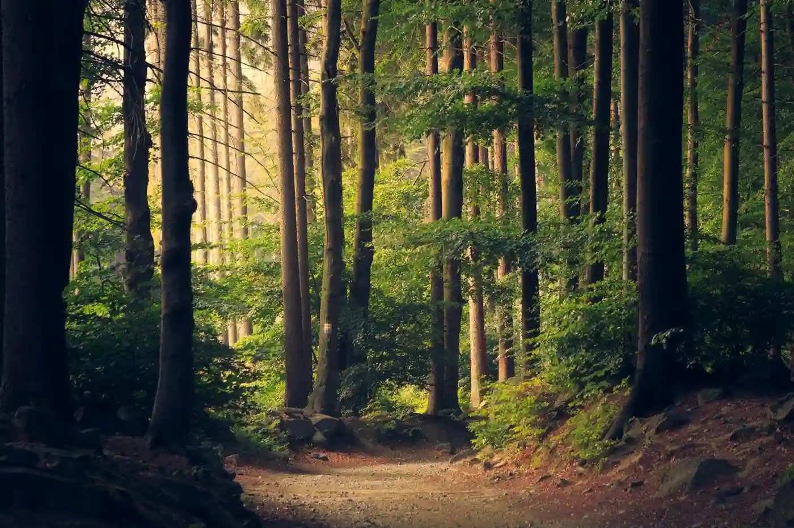
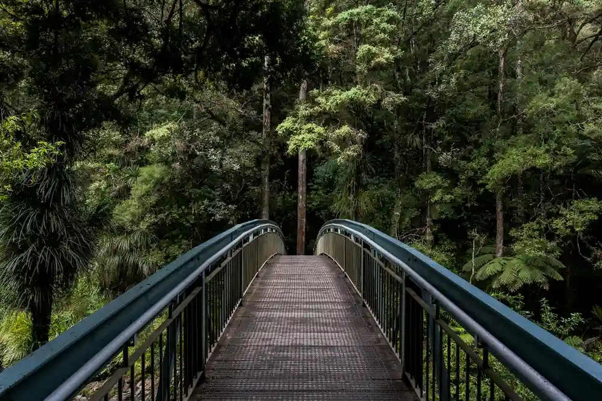
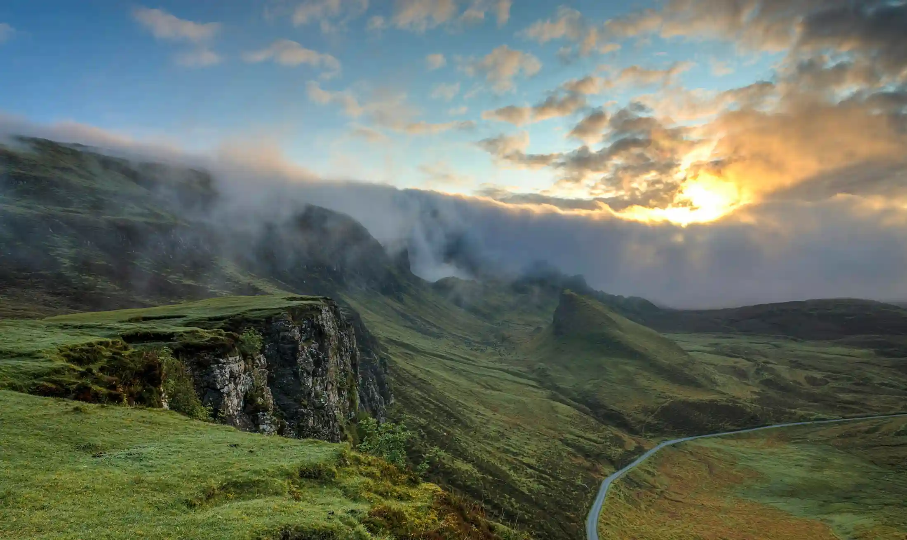
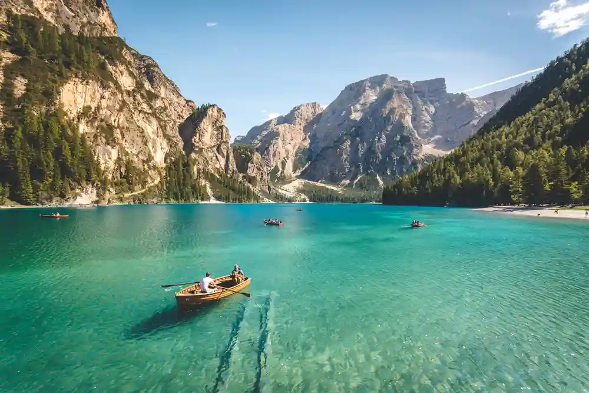

Place comes first
Routes are chosen around what a landscape can host — season, size, sensitivity — not around what photographs best or what a client asked for first.

About Stackly
Stackly is an eco-tourism organisation built around a simple idea: that a journey should leave a landscape and its people better supported — not more crowded, more photographed, or more worn.
Who We Are
We plan and run small-group journeys through forests, hill country, river basins and coastal edges — always with local guides, always at a pace a place can absorb.
We are not a conservation body, and we don't claim to be. What we can do is run travel carefully, hire locally, and be honest about where we still have work to do.
Plan a journey
Where It Began

The first Stackly route wasn't designed — it was walked. A group of friends kept returning to the same ridge in the Western Ghats, and kept finding the same problem: the trails they loved were being loved to death.
So the early trips were small. Deliberately small. Led by people who already lived nearby. Timed to seasons when the ground could take it. That was never a marketing decision — it was a practical one that turned out to be the whole point.
What's grown since is bigger, but the same rule holds: if a place can't comfortably host us, we don't go.
03 — Our Philosophy of Travel
Everything we plan comes back to these. When a decision is unclear, we check it against them.
Routes are chosen around what a landscape can host — season, size, sensitivity — not around what photographs best or what a client asked for first.
Journeys are staffed and hosted by people from the region. Without that, travel is just extraction with a nicer view.
We'd rather tell you what we don't yet know than invent a number that sounds good. Trust is built in the gaps.
Our Journey
Not a full history — just the moments that changed how we run trips.
Informal trips in the Western Ghats, capped at eight people, guided by people who lived nearby.
A proper company formed around a single rule: if the place can't host us, we don't go.
Expanded carefully into the Nilgiri Hills and Kabini River Basin — one region at a time, never in parallel.
Group caps remain at twelve. Every departure is still staffed primarily by people from the region.
The People Behind the Journey
A small team of planners, guides and hosts — most of us still leading trips, not just designing them.

Our Relationship With Place
The regions we travel through aren't destinations to us — they're relationships. That shapes everything: who we hire, when we visit, how long we stay, and how often we come back.
Every route is planned with input from people who live along it.
We move departures away from sensitive windows, even when it costs us bookings.
We add regions slowly — depth over breadth, always.
Measuring Our Footprint
We don't publish invented statistics. Here's what we measure, and the honest gaps we're still working on.
Capped at twelve, tracked per trip, and reported internally every season.
The share of guides, hosts and suppliers sourced from the region travelled.
Everything that enters a camp is logged on the way out — including food waste.
We don't yet have a credible way to measure our total emissions — so we don't claim one.
If a metric isn't listed here, we're not asserting it. That's a deliberate choice.
Beyond Tourism
Travel is a means, not the end. The long-term point is to support conservation and community work that outlasts any single season — and to leave the places we visit more capable, not more crowded.
We support local projects where we can, and we're honest when we can't. What we don't do is attach our logo to causes we haven't actually contributed to.
Where we can, journey revenue contributes to regionally-run conservation and education work.
We partner with people already doing the work, rather than starting parallel efforts.
Same regions, same hosts, year after year — so trust compounds.
The Road Ahead
Not a manifesto — just the direction we're moving in, and what we'll be honest about along the way.
Fewer new regions. More time in the ones we already know.
Credible carbon accounting — even if it takes time to get right.
Handing more of the operation to the people who live in the regions.
Longer stays, fewer miles, more unplanned afternoons.

Travel With Purpose
Every journey starts with a conversation. Tell us what you're after, and we'll tell you honestly whether we're the right fit.